Graphite consists of layers of carbon atoms. Each layer forms a hexagonal lattice with pairs on layers alternating in an ABABAB pattern. Layer B is related to layer A by a translation and a rotation of 60°, so that some atoms in B are directly above the equivalent atom in A, and the three atoms attached to the atom in B are above the centers of hexagons in A. The primitive unit cell for graphite consists of four atoms; these, together with the three translation vectors, can be used in constructing the data-set for use with MAKPOL, as shown in Figure 1. One translation vector is different to the other two, and is therefore unique. If symmetry operations are to be used, then in order for them to work correctly, this translation vector must be the first of the three Tv.
Four keywords are used in the data set for MAKPOL, in order, these are:
MERS=(5,7,7) Five layers, each consisting of a 7 by 7 sheet is sufficient to adequately represent the solid-state structure. The electronic structure within a sheet is more slowly convergent than the structure perpendicular to the sheets. Because of this, fewer mers are needed in the perpendicular direction. In fact, the "5" could be reduced to "3" without significant loss of precision.
LET For Brillouin zone work, atoms are not rearranged into the most aesthetically attractive form.
| Table 1: Points in Irreducible Wedge in Graphite Brillouin Zone | |||
| Point | Location | Description | Symmetry* |
| Γ | (0,0,0) | Center of BZ | D6h |
| K | (0,0,1/√(1/3)) | Join of three hexagons, at c=0 | D3h |
| M | (0,0,½) | Join of two hexagons | C2v |
| A | (1/√(1/3),0,0) | Center of hexagon, at c=½ | C6h |
| H | (1/√(1/3),0,1/√(1/3)) | Join of three hexagons, at c=½ | Cs |
| L | (1/√(1/3),0,½) | Join of two hexagons, at c=½ | C2v |
| *: Point-groups shown are the
nearest to the space-group equivalent |
|||
SYMMETRY Diamond has very high symmetry; keyword SYMMETRY can be used to both simplify the geometry optimization and to preserve the precise octahedral symmetry of the lattice.
INT The resulting geometry is to be in internal coordinates (these are better than Cartesian coordinates for high-symmetry solids.)
When MAKPOL is run, a data-set suitable for use with MOPAC is produced. However, to preserve the perfect hexagonal symmetry additional symmetry definitions should be used. If this is done then only three geometric variables are retained. Two are the C-C in-plain and inter-plain distances, and one is an angle. This angle is, strictly speaking, not a variable, and could be changed to a fixed value by re-defining the connectivity, but the effort of doing this is outweighed by the convenience of using the less-than-perfect connectivity, and just flagging the angle as "to be optimized."
| Figure 1: Data-set for Graphite for use with MAKPOL | |
*
* Data set for Graphite, for use with BZ
*
mers=(5,7,7) let symmetry int
Graphite
C 0.00000000 +1 0.00000000 +1 0.00000000 +1
C 3.34800000 +1 0.00000000 +1 0.00000000 +1
C 3.34800000 +1 1.41711300 +1 0.00000000 +1
C 0.00000000 +1 0.70855650 +1 -1.22725586 +1
Tv 6.69600000 +1 0.00000000 +1 0.00000000 +1
Tv 0.00000000 +1 2.12566975 +1 1.22725600 +1
Tv 0.00000000 +1 2.12566950 +1 -1.22725586 +1
|
Graphite has a hexagonal lattice and this is reflected in the shape of its Brillouin zone, a hexagonal prism. The irreducible wedge consists of a triangular prism. Table 1 gives the location and description of the six vertices of this wedge. Three lines meet at each of these points, so a walk in k-space that covers all nine lines and does not involve traveling along the same line more than once necessarily requires two breaks.
| Figure E1: Graphite Electronic
Band Structure Example of a "Walk" in k-space, using Excel |
| 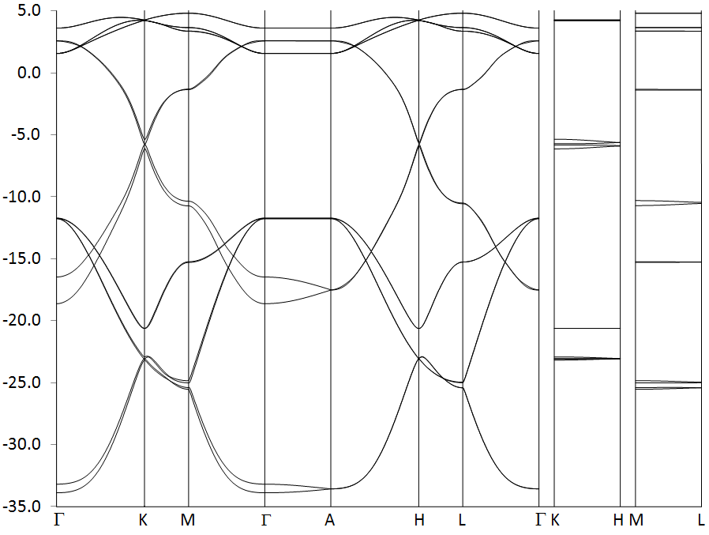 |
The electronic band structure of graphite, represented as a band-structure, is shown in Figure E1. This consists of 16 bands, although, because some bands are almost degenerate, the fact that there are 16 in all is not obvious. Several lines are almost degenerate over the whole walk, but only when the eigenvalues are examined, Table E1, does the degeneracy become apparent. Comparing Figure E1 and Table E1 reveals that in some cases, for example, bands 15 and 16, the degeneracy is not persistent throughout the Brillouin zone, but is lifted in certain regions, see near point M.
| Table E1: Eigenvalues at Γ, K and A | ||||
| Band | Γ | K | A | |
| 16 | 3.593 | 4.255 | 4.255 | |
| 15 | 3.584 | 4.254 | 4.254 | |
| 14 | 2.608 | 4.248 | 4.246 | |
| 13 | 2.576 | 4.244 | 4.246 | |
| 12 | 1.567 | 4.243 | 4.244 | |
| 11 | 1.567 | 4.243 | 4.243 | |
| 10 | 1.563 | -5.343 | -5.611 | |
| 9 | 1.563 | -5.734 | -5.638 | |
| 8 | -11.732 | -5.849 | -5.893 | |
| 7 | -11.732 | -6.144 | -5.920 | |
| 6 | -11.744 | -20.633 | -20.641 | |
| 5 | -11.744 | -20.633 | -20.642 | |
| 4 | -16.502 | -22.944 | -23.068 | |
| 3 | -18.631 | -23.074 | -23.068 | |
| 2 | -33.213 | -23.075 | -23.080 | |
| 1 | -33.906 | -23.211 | -23.080 | |
Four carbon atoms contribute 16 valence electrons, so eight bands are occupied. Over much of the Brillouin zone there is a distinct band-gap between the occupied and empty bands, the exception being at the region of line P, i.e., in the region connecting points K and H. In this region the band-gap drops to almost zero.
Lines through k-space are useful in showing the overall energy spectrum, but are limited in that they do not convey much information about the overall shape of individual bands. A more useful picture is provided by a two-dimensional cut through k-space. An example of such a section, centered on Γ and perpendicular to the Δ line is shown in Figure E2. Three points of interest, Γ, K and M are indicated, along with their coordinates in k-space.
| Figure E2: 2D Section of Band 1 |
| 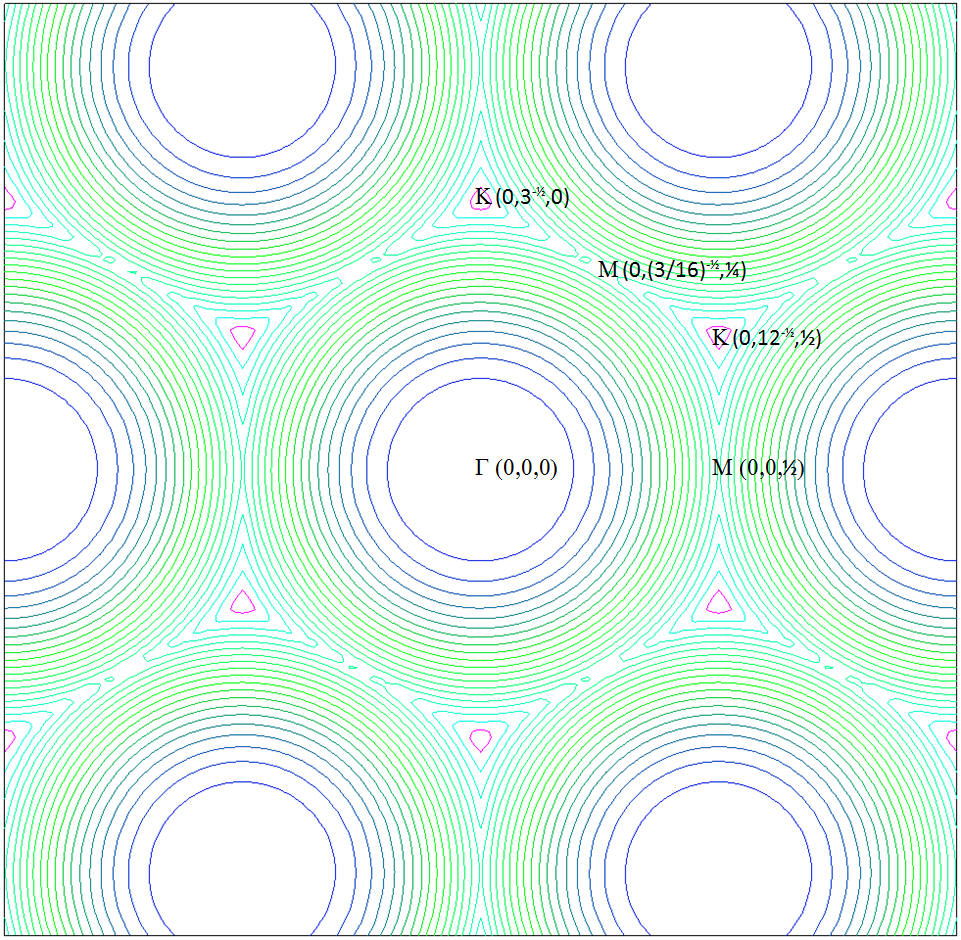 |
Point K is representative of the region of line P. At K, there is three-fold rotational symmetry, a horizontal plane of symmetry and three vertical planes of symmetry. More important, a theoretical analysis of bands in this region indicate that, in graphite at least, the HOMO-LUMO gap should drop to exactly zero. This provides a good test of the qualitative band-structure predicted by BZ. In Table E2 the HOMO-LUMO gaps at point K for various cluster sizes are shown. As expected, the 3x5x5 Large Unit Cell (LUC) has the largest gap, at 0.21eV. On increasing the size of the sheet to 3x7x7 the gap decreases by 45%, and on increasing the size of the stack to 5x7x7 the gap drops by less than 1%. This is as expected: the electronic structure in the plane of the sheets is much more extensive and complicated than in the direction perpendicular to the sheets.
| Table E2: HOMO-LUMO gap at K | ||||||
| Large Unit Cell | HOMO | LUMO | Gap | |||
| 3x5x5 | -5.8618 | -5.6533 | 0.2085 | |||
| 3x7x7 | -5.8486 | -5.7330 | 0.1156 | |||
| 5x7x7 | -5.8493 | -5.7340 | 0.1153 | |||
| All energies are in eV | ||||||
That the gap starts off at 0.21eV then drops rapidly as the LUC is increased in size kin the plane of the sheets is strongly indicative that a further increase in size would result in a further decrease of the HOMO-LUMO gap. Unfortunately, an attempt to run a 3x9x9 LUC was unsuccessful - the system converged on an electronic excited state. Notwithstanding this failure, the implications of the decreasing band-gap are obvious: the electronic band-structure is qualitatively correct.
When Bands 8, the HOMO, and 9, the LUMO, are plotted, the large number of contours in the region of K is indicative of the steep rise (in Band 8) and fall (in Band 9) in energy as the point K is approached.
| Figure E3: Bands 8 (left) and 9 (right) showing the structure near point K | |
| 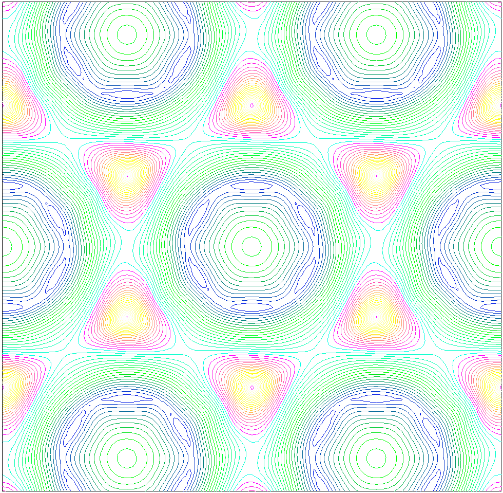 | 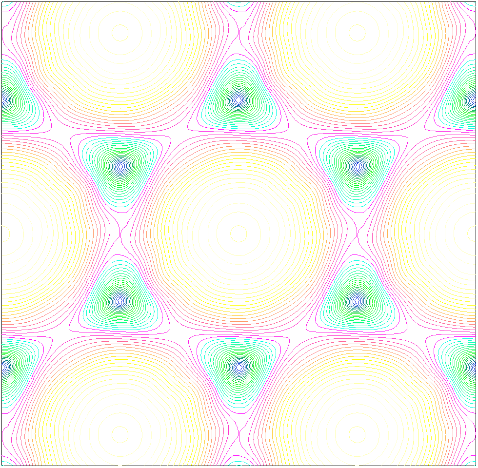 |
| Figure E4: Band 8 | Band 9 | Bands 8 and 9 | Bands 8 and 9, detail near K |
| 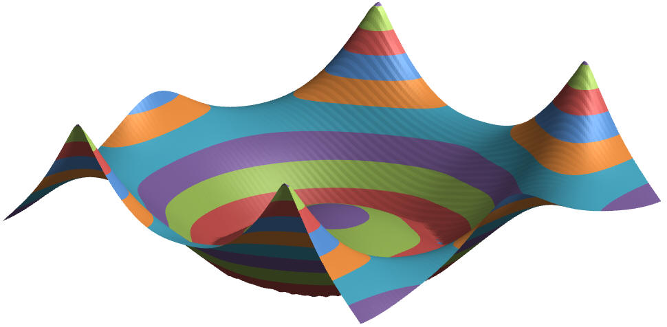 | 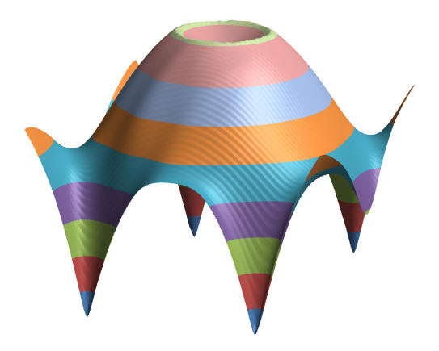 | 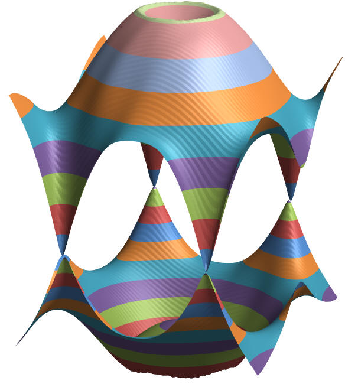 | 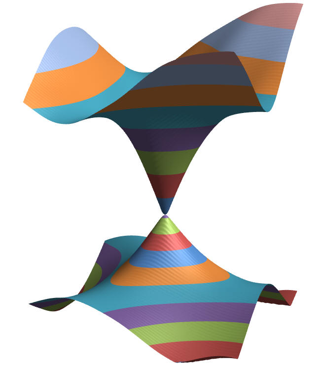 |
| Figure P1: Phonon Band Structure for Graphite |
| 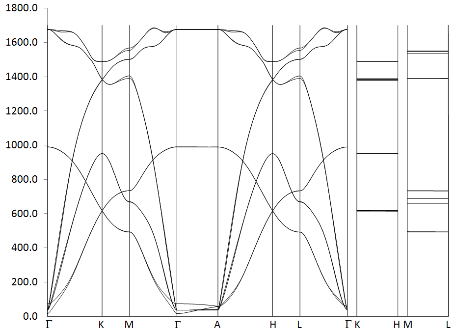 |
Generating the electronic structure of graphite involves only a few SCF calculations. In contrast, the phonon structure involves a large number of SCF calculations, six times the number of carbon atoms. In the case of the 3x5x5 LUC, there are 300 atoms = 4 atoms in the primitive unit cell times 75 unit cells (75 = 3x5x5), and therefore 1800 SCF calculations are needed. This resulted in the entire calculation requiring over 22 CPU hours. The next larger calculation, the 3x7x7 LUC, would have required over 12 CPU days; this was considered to be too long for routine work.
| Figure P2: Excel Phonon Band Structure | Detail of the Γ region, showing the absence of the artifact |
| 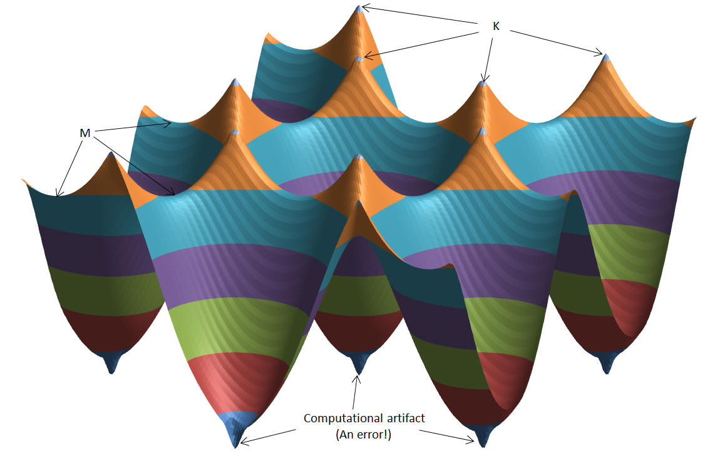 | 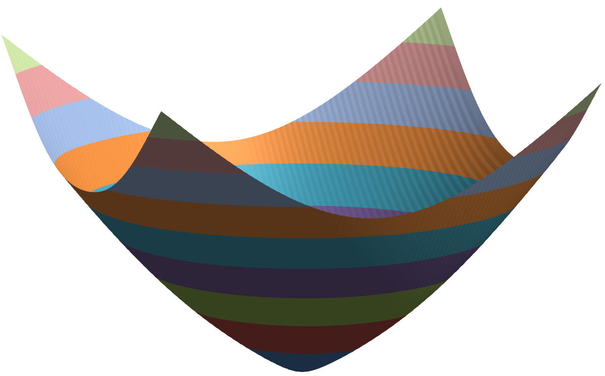 |
Using the 3x5x5 LUC a reasonable phonon band structure was generated, Figure P1. Figure P2 shows the 3-D Excel map of Band 1, in the plane perpendicular to the unique axis, and centered on Γ. As with the electronic structure, the phonon structure shows many of the qualitative features expected, e.g., bands crossing and the degeneracy at K. A requirement of phonon spectra, that the lowest vibrational frequency should be 0.0 cm-1, was almost achieved. That the lowest vibrational frequency was 15.2 indicates that there is some error in the phonon calculation. However, errors in vibrational frequencies due to computational issues tend to be largest in the lowest frequencies, and at higher frequencies the errors attributable to computational effects decrease to about 1 cm-1.
In Figure P2, a computational artifact can be seen in the region of Γ, further examination showed that the artifact was being caused by Excel. When the region in question was examined in detail, the artifact vanished.